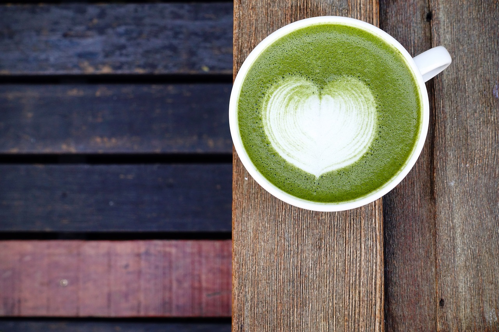
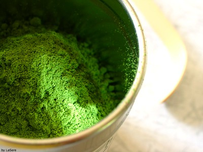

Matcha is a finely ground powder made from specially grown and processed green tea leaves. Originating in Japan, this vibrant green powder has been celebrated for centuries for its unique flavor, rich history, and numerous health benefits.
History
The tradition of matcha dates back to the 9th century when Zen Buddhist monks discovered its ability to enhance concentration and meditation during long hours of sitting. Over the centuries, matcha evolved from a ceremonial drink to a versatile ingredient used in various culinary creations.
How it is made?
Matcha is made from shade-grown tea leaves, which are carefully handpicked, steamed, dried, and stone-ground into a fine powder.
Health benefits:
- Heart health
- Boosted metabolism
- Enhanced cognitive function
- Provides a gentle energy boost without the jitters often associated with coffee, thanks to its balanced combination of caffeine and L-theanine.